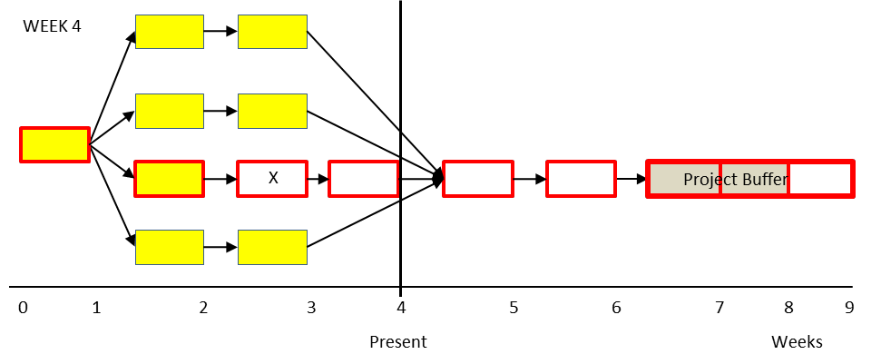

скорость сжигания буфера (buffer burn rate) - мера общей скорости, с которой буфер проекта потребляется для проекта на сегодняшний день. Вторая мера из набора из трех мер в управлении буфером для управления проектами критической цепочки одного и нескольких проектов.
скорость сжигания буфера = процент использованного буфера проекта / процент завершенной критической цепочки
Использование: Скорость сжигания буфера используется для ответа на вопросы: удовлетворителен ли общий прогресс по проекту? Каков мой текущий статус проекта? Скорость сжигания буфера 1,0 или меньше - это хорошо. Первым показателем статуса проекта является процент завершения критической цепочки; третья мера - это уровень потребления буфера проекта.
Пример: три показателя прогресса проекта проиллюстрированы в приведенных ниже сетях, которые показывают проект с шестинедельной критической цепочкой (задачи выделены жирными линиями). Каждая задача в проекте занимает одну неделю. Первым показателем прогресса проекта является процент завершения критической цепочки. В этом случае выполнены две недели (заштрихованные задачи) или 33% (2 недели / 6 недель) задач критической цепочки. Это хорошо или плохо? Чтобы определить этот ответ, необходимо проанализировать вторую и третью меры. Предположим, что все задачи были выполнены в соответствии с оценкой, за исключением задачи X, и ресурс застрял в этой задаче. Вторым показателем прогресса проекта является скорость сжигания буфера, которая в конце третьей недели составляет (33% / 33%), или 1,0. Одна треть буфера проекта была израсходована, а одна треть критической цепочки была завершена. На данный момент в проекте нет проблем, поскольку уровень потребления буфера равен уровню потребления критической цепи.
В приведенной ниже сети показано состояние того же проекта в конце недели 4, и ресурс по-прежнему застревает в задаче X.
На данный момент израсходовано 67% буфера проекта, в то время как те же 33% работы по критической цепочке завершены.
Скорость сжигания буфера сейчас (67% / 33%) или 2,0. Это один из признаков того, что у проекта проблемы. Третий показатель прогресса проекта, уровень потребления буфера проекта, показывает, что проект потребляет буфер проекта из расчета одной недели на каждую рабочую неделю. Идеальная норма потребления - для каждых трех периодов времени, два периода должны быть завершены критической цепочкой задач и один период потребления буфера проекта. Поскольку работа по критической цепочке не была завершена, пока была израсходована еще одна неделя буфера проекта, у проекта серьезные проблемы, и следует принять немедленные меры, чтобы вернуть проект в соответствие с графиком.

См .: критическая цепь завершена, уровень потребления буфера проекта, меры управления проектом.
#ccpm
Синоним: buffer burn rate